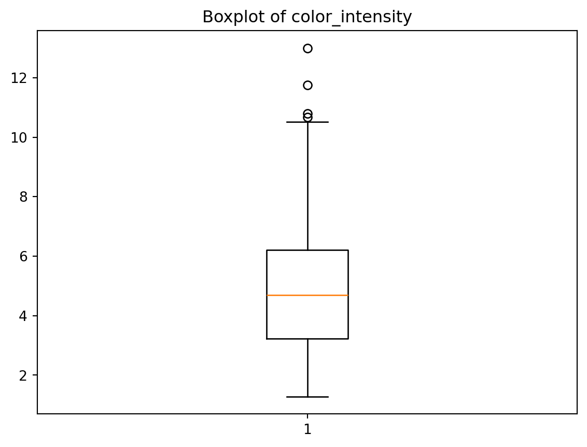

import pandas as pd
import matplotlib.pyplot as plt
from pandas.core.common import random_state
from sklearn.datasets import load_wine
wine_load = load_wine()
wine = pd.DataFrame(wine_load.data, columns=wine_load.feature_names)
wine['class'] = wine_load.target
wine['class'] = wine['class'].map({0: 'class_0', 1: 'class_1', 2: 'class_2'})
plt.boxplot(wine['color_intensity'], whis=1.5)
plt.title('Boxplot of color_intensity')
plt.show()